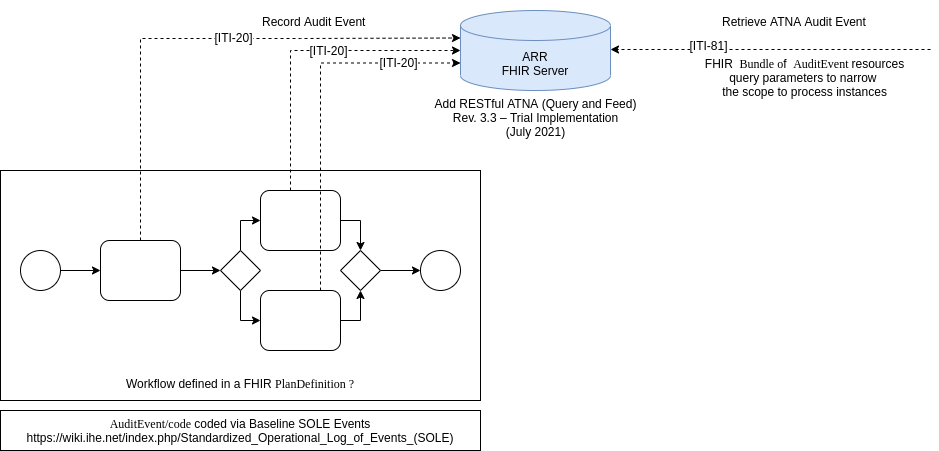

This fragment is not visible to the reader
| Type | Reference | Content |
|---|---|---|
| web | github.com | This is the implementation guide for the Process Intelligence and Conformance Auditing (PICA) Profiles (v0.1.0: STU 1) based on HL7® FHIR® R4. It is a draft implementation guide that is hosted on the HL7® Austria github project . The most recent version of this implementation guide can be found at the HL7® Austria FHIR® Website . |
| web | fhir.at | This is the implementation guide for the Process Intelligence and Conformance Auditing (PICA) Profiles (v0.1.0: STU 1) based on HL7® FHIR® R4. It is a draft implementation guide that is hosted on the HL7® Austria github project . The most recent version of this implementation guide can be found at the HL7® Austria FHIR® Website . |
| web | github.com | FHIR® Shorthand documentation code repository |
| web | github.com | SUSHI code repository |
| web | www.ihe.net | PICA can be applied to any FHIR® based audit logging. It is aligned with concepts from the IHE RESTful Audit Trail and Node Authentication (RATNA) profile. |
| web | www.ihe.net | To be applicable as an addition in existing infrastructures, it is recommended to implement PICA as an Audit Record Repository . An example for this, specific to the radiology domain, is outlined in IHE Standardized Operational Log of Events (SOLE) profile. |
| web | github.com | The PICA Project hosts a reference implementation of the Audit Record Repository on GitHub FHOOE-AIST-PICA-Server . This is a HAPI based FHIR® server, supporting all profiles, extensions, and FHIR® Operations this IG has to offer. |
| web | hapifhir.io | The PICA Project hosts a reference implementation of the Audit Record Repository on GitHub FHOOE-AIST-PICA-Server . This is a HAPI based FHIR® server, supporting all profiles, extensions, and FHIR® Operations this IG has to offer. |
| web | pods4h.com | The following table shows the possible options PICA can be applied for conformance purposes. Based on the core , which is required at all times in a patient centric view, each view can be applied individually or joined with each other. These perspectives are based on the work Process Mining on FHIR - An Open Standards-Based Process Analytics Approach for Healthcare |
| web | aist.fh-hagenberg.at | In addition to PICA being this IG, it is also a project at the University of Applied Sciences Upper Austria going until December of 2025. If you have requirements concerning conformance checking of processes that are not covered in this implementation guide, or have questions on how to apply this IG, please contact the AIST research team , specifically Oliver Krauss (oliver.krauss@fh-hagenberg.at) or Andreas Pointner (andreas.pointner@fh-hagenberg.at). |
|
PICA.drawio.png  |
|
picalogo.png
|
|
tree-filter.png
|